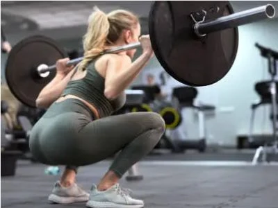
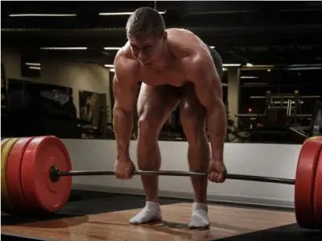
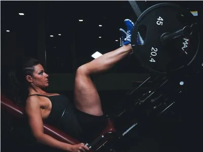
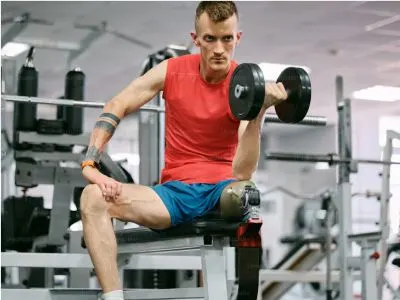

Lower Body Workout
Strengthen your legs and glutes with targeted exercises
1. Barbell Back Squats
The king of leg exercises. Squats build strength in your quads, glutes, and hamstrings while engaging your core.
Sets & Reps: 4 sets × 8 reps
Tips: Keep your chest up, descend until your thighs are parallel to the ground, and drive through your heels.
2. Romanian Deadlifts (RDLs)
A posterior chain builder that strengthens your hamstrings, glutes, and lower back with a hip hinge movement.
Sets & Reps: 3 sets × 10 reps
Tips: Maintain a slight knee bend, hinge at the hips, and feel the stretch in your hamstrings.
3. Leg Press
A machine-based exercise that safely builds leg strength with reduced spinal load compared to free-weight squats.
Sets & Reps: 3 sets × 12 reps
Tips: Place your feet shoulder-width apart, lower until knees are at 90 degrees, and press through your heels.
4. Leg Curls
An isolation exercise that targets the hamstrings and helps balance quad-dominant leg development.
Sets & Reps: 3 sets × 12 reps
Tips: Control the weight, curl your legs toward your glutes, and avoid jerking the weight.
5. Walking Lunges
A functional movement that builds unilateral leg strength, balance, and improves mobility.
Sets & Reps: 3 sets × 10 reps per leg
Tips: Take controlled steps, keep your torso upright, and ensure your front knee stays over your ankle.
3. Leg Press
A machine-based exercise that safely builds leg strength with reduced spinal load compared to free-weight squats.
Sets & Reps: 3 sets × 12 reps
Tips: Place your feet shoulder-width apart, lower until knees are at 90 degrees, and press through your heels.
Lower Body Workout Tips
- Rest 2-3 minutes between heavy compound sets (squats, deadlifts)
- Rest 60-90 seconds between isolation exercise sets
- Prioritize form over weight to prevent injury
- Include dynamic stretching before your workout
- Static stretch after your workout for better recovery
- Ensure adequate protein intake for muscle recovery